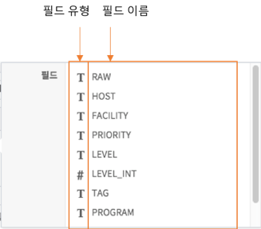
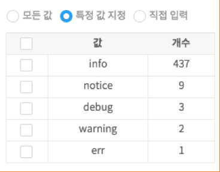
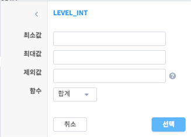

이상탐지¶
이상탐지 화면 개요¶
이상탐지 기능은 사용자가 지정한 데이터와 시간 범위 내에서 다양한 옵션과 알고리즘을 통해 급격한 변화나 평소에는 나타나지 않는 값 등 이상치를 검출하는 기능을 제공합니다. 이상탐지 화면의 구성은 다음과 같습니다.

| 번호 | 구분 | 설명 |
| 1 | 모델/시간 설정 | 검색하고자 하는 데이터 모델과 검색 기간을 설정 |
| 2 | 필드 목록 | 선택한 데이터 모델의 필드들을 표기 |
| 3 | 검색 정보 표기 | 데이터 모델/시간/검색어 등의 설정된 정보들을 표기하는 영역 |
| 4 | 카드 영역 | 추가하거나 실행된 카드들이 바둑판식으로 나열되는 영역 |
| 5 | 카드 추가 버튼 | 카드를 추가하는 버튼. 클릭하면 설정 다이얼로그가 팝업됩니다. |
이상탐지 수행하기¶
이상탐지를 수행하고자 한다면 키/값 필드, 비교/참조 기간, 분석 모델 등 복잡한 조건들을 설정해야 합니다. 데이터 브라우저에서는 이를 최대한 쉽게 설정할 수 있도록 돕는 UI를 제공합니다.
이상탐지 조건 설정하기¶
카드 추가 버튼을 클릭하면, 아래 그림과 같은 이상탐지 실행 옵션 다이얼로그가 popup 됩니다.

| 번호 | 구분 | 설명 |
| 1 | 카드 제목 입력란 | 카드 제목을 설정하는 입력란. Default로는 “Untitled” 텍스트와 숫자의 조합이 입력됩니다. |
| 2 | 분석 설정 |
|
| 3 | 시간 설정 |
|
| 4 | 상세 옵션 숨기기/펼치기 버튼 | 분석 설정 및 시간 설정 중 일부 옵션을 숨기거나 펼치는 버튼. 분석 설정에서는 “없는 키 값”, “결측치”가, 시간 설정에서는 “참조 기간”, “요일 분류” 등이 대상입니다. |
| 5 | 실행 버튼 | 현재까지 입력한 설정으로 카드를 추가하며 이상탐지 작업을 수행합니다. |
| 6 | 취소/초기화 버튼 | 아무런 작업을 하지 않고 설정 다이얼로그를 닫거나, 현재까지 입력한 설정값들을 기본값으로 초기화합니다. |
주요 설정 1. 키 필드 설정하기¶
“추가” 버튼을 클릭하면, 필드 리스트가 오픈 됩니다. 필드 리스트는 아래와 같이 필드 유형과 필드 명으로 구성되어 있습니다.
오픈된 필드 리스트 중에서 키 필드로 지정하고자 하는 필드를 선택하면, 아래와 같은 상세 설정 popup이 오픈 되고, “레이블”과 “최대 키 개수”, “특정 값 지정”을 통한 필터 설정 등을 수행할 수 있습니다

“최대 키 개수” 입력란 하단의 라디오 버튼 그룹은 특정 키 필드에 대해서 수행하기 위한 일종의 필터 옵션입니다. “모든 값”을 선택할 경우 필터를 설정하지 않고 모든 키 필드 값에 대해 분석을 수행하며, “특정 값 지정”을 선택한 경우에는 아래 그림처럼 상위 10개 키 값이 그리드 뷰로 출력되어 이를 체크박스로 선택할 수 있습니다.
원하는 값을 “특정 값 지정”에서 찾지 못한 경우, “직접 입력”을 선택 후 입력란에 값을 입력하는 방식으로 원하는 키 값을 직접 지정할 수 있습니다. (콤마(,)로 구분하여 입력)

주요 설정 2. 값 필드 설정하기¶
“추가” 버튼을 클릭하면, 필드 리스트가 오픈 됩니다. 필드 리스트는 아래와 같이 필드 유형과 필드 명으로 구성되어 있습니다.
오픈된 필드 리스트 중에서 값 필드로 지정하고자 하는 필드를 선택하면, 아래와 같은 상세 설정 popup이 오픈 되고, “최소값”, “최대값”과 “함수” 등을 통한 설정을 수행할 수 있습니다.
주요 설정 3. 비교 기간 설정하기¶
비교 기간의 기본값은 시간 범위 설정입니다. 이를 변경하고자 한다면 “캘린더” 버튼을 눌러 시간 설정 popup을 띄우면 됩니다. 아래 그림과 같은 시간 설정 창이 popup 되며, 인터페이스는 화면 좌단의 시간 범위 설정과 동일합니다.

카드 기능 활용 하기¶
이상탐지 화면에서 실행 옵션 다이얼로그를 통해 카드를 추가하면 카드 영역에 추가된 카드가 표시됩니다.

| 번호 | 구분 | 설명 |
| 1 | 실행 옵션 정보 버튼 | 마우스를 버튼 위에 올리면 해당 카드의 실행 옵션 내용을 툴팁으로 보여줍니다. |
| 2 | 제목 | 실행 옵션에서 설정한 카드 제목을 표시합니다. |
| 3 | 스케일 모드 on/off | Heatmap 차트의 각 cell별 색상을 모든 값에 대하여 계산할지 행 단위로 계산할지 여부를 선택합니다. (Heatmap 일 때만 나타납니다.) |
| 4 | 확대/축소 버튼 | 카드를 확대하거나 축소하는 버튼입니다. 차트 |
| 5 | 메뉴 버튼 |
|
| 6 | 차트 영역 | 차트가 그려지는 영역입니다. 실행 옵션에 따라 Heatmap 혹은 Line plot 이 그려집니다. |